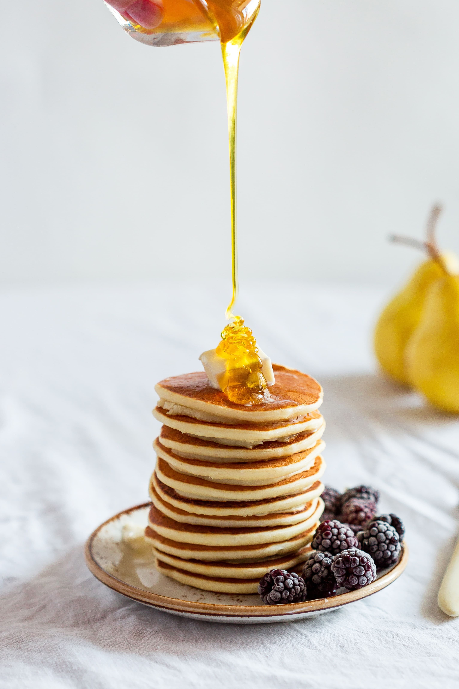

Family Recipes
Bringing food back from childhood
Isn't it hard when you are trying to cook something to feel a piece of home and you can’t remember that ingredient that will finish off your grandma's famous cookies? My idea for a website is to incorporate my favorite recipes for all the grandkids of my family to have our best-loved recipes when we live all over. I want the website to be available for my family to scroll through and see the many different recipes and have instructions on how to do each one, even having a place where they can add more. My unique selling proposition is that I would do a website wire to do for other families so then every family can have this fun recipe page of their families' unique recipes. Please add yours today and share your favorite recipes!
